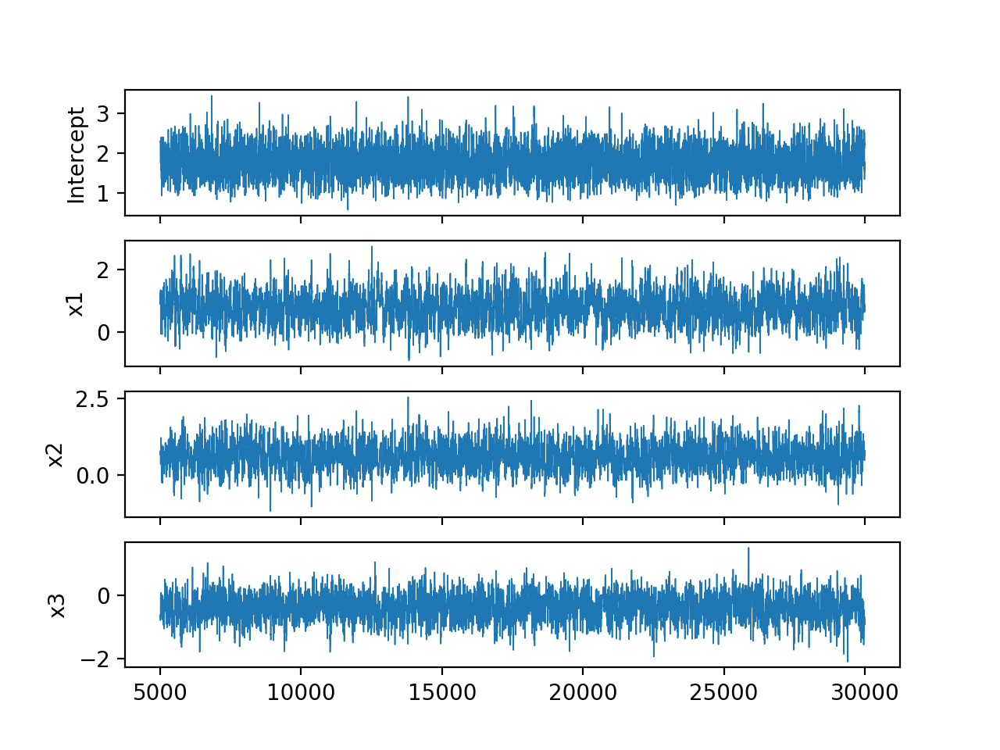

Software
BayesGLM
BayesGLM is a Python package for fitting Generalised Linear Models within a Bayesian framework. The package supports a wide range of prior distributions. Models are fitted by using an adaptive Metropolis Hastings algorithm. The underlying mathematics is written in C++ for speed and interfaces with Python using Cython. The model fitting is done via a central ‘glm’ object, similar in functionality to that found in the R language. Source is available at bayesglm.
Example snippets for fitting a Bayesian logistic regression using BayesGLM are given below.
import pandas
from bayesglm.bglm import glm
from bayesglm.distributions import Binomial, Normal, Uninformed
data = pandas.read_excel("data/bernoulli_data.xls", header=None)
data.columns = ["y", "x1", "x2", "x3"]
priors = {
"Intercept" : Uninformed(),
"x1" : Normal(mu=0, sigma=3),
"x2" : Normal(mu=0, sigma=3),
"x3" : Normal(mu=0, sigma=3)
}
model = glm(formula="y ~ x1 + x2 + x3",
priors=priors,
family=Binomial(link='logit'),
data=data)We fit the model via MCMC sampling (adaptive Metropolis-Hastings).
model.fit(chain_length=30000, burn_in=5000)[=====================================================================>] 30000/30000 (2 seconds)We can then view a summary of the posterior distribution.
model.summary() Bayesian GLM Summary
------------------------------------------------------------------------------------
DIC: 72.4154 | Chain iters : 30000 | Formula : y ~ .
N : 76 | Burn-in : 5000 | Family : binomial(link=logit)
------------------------------------------------------------------------------------
Node Prior Mean s.d. [2.5% 97.5%] Acc. Rate
------------------------------------------------------------------------------------
Intercept uninformed 1.747 0.360 1.077 2.496 0.284
x1 normal 0.782 0.486 -0.127 1.764 0.301
x2 normal 0.606 0.422 -0.215 1.451 0.260
x3 normal -0.406 0.390 -1.189 0.322 0.259
------------------------------------------------------------------------------------Various plots can also be produced. For example, we may view the sampled MCMC chains using:
model.plot_chain_trace(burn_in=False)
plt.show()
plt.close()
NGlm
An R library for fitting Bayesian linear models using Normal-Gamma shrinkage priors (Griffin and Brown, 2010). Such priors are appropriate when we have many predictors but relatively few data points. Posterior inference is performed using the blocked Gibbs sampler of Griffin and Brown (2010). The numerical code is written in C++ for efficiency and interfaces with R using the Rcpp API. This library is available at NGlm. Example usage of the R package is given below.
library(NGlm)
# generate dummy data
set.seed(1234)
p <- 100
n <- 75
X <- matrix(rnorm(p*n, 0, 1), nrow=n, ncol=p)
beta <- rep(0, p)
beta[1:5] <- 5
y <- X%*%beta + rnorm(n, 0, 1)
# fit the model
mod <- NG(y, X, verbose=FALSE, n_samples=10000, n_thin=1)
# inspect the beta 1 chain
plot(mod$samples[2000:10000, 'beta_1'], type='l')
# geneate posterior summary estimates
summary(mod, burnin=2000)Produces the output:
Call:
NG(y = y, X = X, verbose = FALSE)
n = 75
p = 100
MCMC Samples: 10000 Burn-in: 2000
Coefficients (non-zero only):
mean 2.5% 97.5%
alpha 1.839836 1.600198 2.086501
beta_1 4.916641 4.685911 5.152642
beta_10 5.090981 4.865482 5.313934
beta_20 4.970170 4.666417 5.281846
beta_30 4.861412 4.632176 5.087879
beta_40 5.110184 4.879636 5.340332
Errors Standard Deviation:
mean 2.5% 97.5%
0.8611414 0.6948363 1.0581903
Shrinkage Parameters:
mean 2.5% 97.5%
lambda 0.02819610 0.015775557 0.04301182
gamma 0.04357078 0.007551935 0.11947228